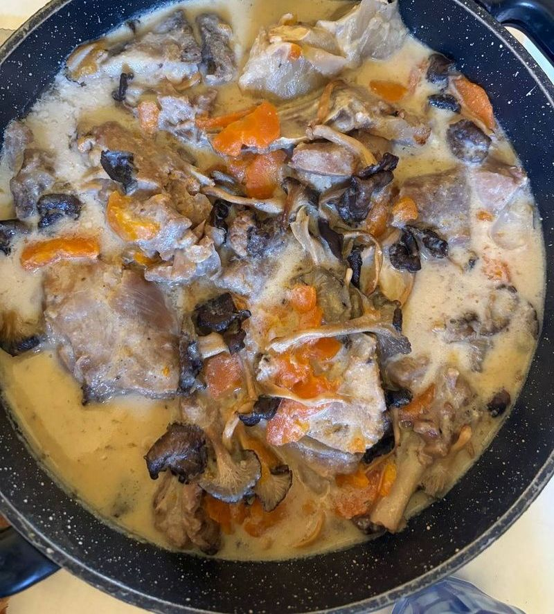

← Recettes

Blanquette de Chevreau de Pâques
🎉 Repas de fête
⏱️ 15 min
🔥 35 min (cocotte-minute)
👥 4 pers.
🍽️ Plat
Ingrédients
La viande
- 800 g d'épaule ou de collier de chevreau (avec os = plus de goût)
- 1 oignon entier
- 2 carottes
- 1 branche de thym
- 1 feuille de laurier
- 2 cs d'huile d'olive
La sauce
- 2 jaunes d'œufs
- 20 cl de lait sans lactose
- 1 cs de farine
Les légumes & accompagnement
- 200 g de chanterelles
- 8 petites pommes de terre (2 par personne)
- Sel
Préparation
-
1Faire revenir les morceaux de chevreau dans 2 cs d'huile d'olive, saler la viande
-
2Ajouter l'oignon entier, les carottes en rondelles, le thym et le laurier
-
3Mouiller à hauteur avec de l'eau froide, porter à ébullition
-
4Fermer la cocotte-minute, cuire 35 minutes à partir de la rotation de la soupape
-
5En parallèle : faire revenir les chanterelles à part dans un peu d'huile d'olive. Réserver
-
6Cuire les pommes de terre à la cocotte vapeur en parallèle
-
7Retirer la viande, filtrer le bouillon (garder ~50 cl). Faire chauffer le bouillon filtré
-
8Mélanger dans un bol : jaunes d'œufs + lait sans lactose + farine
-
9Hors du feu, incorporer le mélange au bouillon chaud ⚠️ (jamais bouillir sinon ça tranche)
-
10Remettre sur feu doux, remuer jusqu'à épaississement
-
11Remettre la viande et les chanterelles dans la sauce. Chauffer doucement 10 min. Saler
-
12Servir la blanquette avec les pommes de terre vapeur 🐐
Notes
- Le bouillon peut être récupéré pour une soupe le lendemain
- Se conserve 2-3 jours au frigo, se congèle bien
- Recette traditionnelle de Pâques 🐣